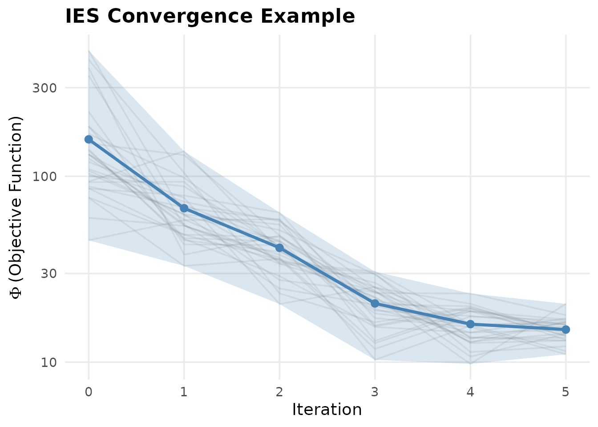
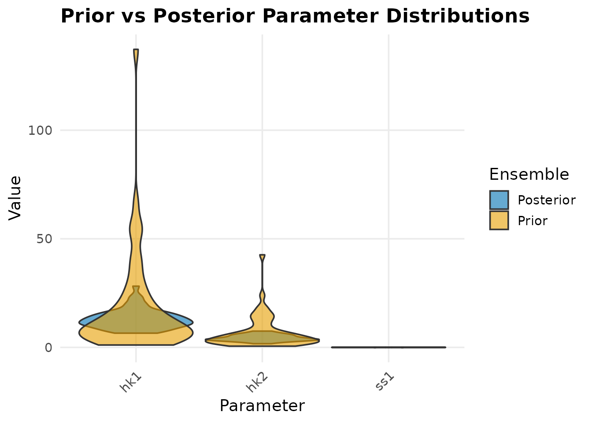

Introduction
PESTO (Parameter Estimation, Surrogates, and Tooling for Optimisation) is an R package for high-performance parameter estimation, uncertainty quantification, and inverse modelling. It brings the algorithms of PEST (Parameter ESTimation; Doherty 2015) and its C++ successor PEST++ (White et al. 2020) natively into the R ecosystem, and extends them with a typed forward-model contract, an in-process simulator callback, multi-fidelity acceleration, and surrogate methods.
Key Features
- Iterative Ensemble Smoother (IES): Ensemble-based parameter estimation that scales to 100,000+ parameters without computing explicit Jacobians
- Gauss-Levenberg-Marquardt (GLM): Deterministic gradient-based estimation with SVD regularisation
- Global Sensitivity Analysis: Morris and Sobol methods
- Parametric Sweep: Embarrassingly parallel model evaluations
- Publication-quality diagnostics: ggplot2-based visualisations
Installation
# From GitHub (development version):
remotes::install_github("max578/PESTO")
# PEST++ binaries must be on your PATH or bundled with the packageQuick Start: Creating a Model Scenario
Rather than requiring a pre-existing PEST control file, PESTO lets you define problems programmatically:
library(PESTO)
library(data.table)
#>
#> Attaching package: 'data.table'
#> The following object is masked from 'package:base':
#>
#> %notin%
# Define parameters
parameters <- data.table(
parnme = c("hk1", "hk2", "hk3", "ss1", "rch1"),
partrans = c("log", "log", "log", "log", "fixed"),
parchglim = "factor",
parval1 = c(10, 5, 1, 1e-4, 1e-3),
parlbnd = c(0.1, 0.01, 0.001, 1e-7, 1e-5),
parubnd = c(1000, 500, 100, 0.01, 0.1),
pargp = c("hk", "hk", "hk", "ss", "rch")
)
# Define observations
observations <- data.table(
obsnme = paste0("h", 1:10),
obsval = c(25.3, 24.1, 22.8, 21.5, 20.2,
19.0, 17.8, 16.5, 15.3, 14.0),
weight = rep(1.0, 10),
obgnme = "heads"
)
# Create the scenario
pst <- create_pest_scenario(
parameters = parameters,
observations = observations,
model_command = "python run_groundwater.py"
)
print(pst)
#> $control_data
#> $control_data$rstfle
#> [1] "restart"
#>
#> $control_data$pestmode
#> [1] "estimation"
#>
#> $control_data$npar
#> [1] 5
#>
#> $control_data$nobs
#> [1] 10
#>
#> $control_data$npargp
#> [1] 3
#>
#> $control_data$nprior
#> [1] 0
#>
#> $control_data$nobsgp
#> [1] 1
#>
#> $control_data$ntplfle
#> [1] 0
#>
#> $control_data$ninsfle
#> [1] 0
#>
#>
#> $parameters
#> parnme partrans parchglim parval1 parlbnd parubnd pargp scale offset dercom
#> <char> <char> <char> <num> <num> <num> <char> <num> <num> <int>
#> 1: hk1 log factor 1e+01 1e-01 1e+03 hk 1 0 1
#> 2: hk2 log factor 5e+00 1e-02 5e+02 hk 1 0 1
#> 3: hk3 log factor 1e+00 1e-03 1e+02 hk 1 0 1
#> 4: ss1 log factor 1e-04 1e-07 1e-02 ss 1 0 1
#> 5: rch1 fixed factor 1e-03 1e-05 1e-01 rch 1 0 1
#>
#> $observations
#> obsnme obsval weight obgnme
#> <char> <num> <num> <char>
#> 1: h1 25.3 1 heads
#> 2: h2 24.1 1 heads
#> 3: h3 22.8 1 heads
#> 4: h4 21.5 1 heads
#> 5: h5 20.2 1 heads
#> 6: h6 19.0 1 heads
#> 7: h7 17.8 1 heads
#> 8: h8 16.5 1 heads
#> 9: h9 15.3 1 heads
#> 10: h10 14.0 1 heads
#>
#> $model_command
#> [1] "python run_groundwater.py"
#>
#> $io_files
#> Null data.table (0 rows and 0 cols)
#>
#> $pestpp_options
#> list()
#>
#> $file
#> [1] NA
#>
#> attr(,"class")
#> [1] "pesto_pst"Core Computational Kernel
PESTO provides the ensemble_solution() function – a
high-performance C++ implementation of the IES update equation. This is
the computational heart of the package:
set.seed(42)
npar <- 50
nobs <- 100
nreal <- 30
# Generate synthetic ensemble differences
par_diff <- matrix(rnorm(npar * nreal, sd = 0.1), npar, nreal)
obs_diff <- matrix(rnorm(nobs * nreal, sd = 1.0), nobs, nreal)
obs_resid <- matrix(rnorm(nobs * nreal, sd = 0.5), nobs, nreal)
par_resid <- matrix(rnorm(npar * nreal, sd = 0.1), npar, nreal)
weights <- rep(1.0, nobs)
parcov_inv <- rep(1.0, npar)
Am <- matrix(rnorm(npar * (nreal - 1)), npar, nreal - 1)
# Run the ensemble update
upgrade <- ensemble_solution(
par_diff = par_diff,
obs_diff = obs_diff,
obs_resid = obs_resid,
par_resid = par_resid,
weights = weights,
parcov_inv = parcov_inv,
Am = Am,
cur_lam = 1.0
)
cat("Upgrade matrix dimensions:", dim(upgrade), "\n")
#> Upgrade matrix dimensions: 30 50
cat("Mean absolute upgrade:", mean(abs(upgrade)), "\n")
#> Mean absolute upgrade: 0.01283321Performance Benchmarking
The C++ kernel is significantly faster than equivalent R code:
# Benchmark the kernel
if (requireNamespace("microbenchmark", quietly = TRUE)) {
bench <- microbenchmark::microbenchmark(
PESTO_cpp = ensemble_solution(
par_diff, obs_diff, obs_resid, par_resid,
weights, parcov_inv, Am, cur_lam = 1.0
),
times = 100
)
print(bench)
}
#> Unit: microseconds
#> expr min lq mean median uq max neval
#> PESTO_cpp 430.033 432.922 443.4298 442.3355 446.568 567.419 100Visualisation
PESTO provides publication-quality ggplot2-based diagnostics:
# Simulate convergence data
phi_history <- data.table(
iteration = rep(0:5, each = 30),
phi = c(
rlnorm(30, 5, 0.5),
rlnorm(30, 4, 0.4),
rlnorm(30, 3.5, 0.3),
rlnorm(30, 3, 0.25),
rlnorm(30, 2.8, 0.2),
rlnorm(30, 2.7, 0.15)
),
real = rep(paste0("r", 1:30), 6)
)
# Reshape wide for plot_phi
phi_wide <- dcast(phi_history, iteration ~ real, value.var = "phi")
plot_phi(phi_wide, show_reals = TRUE, title = "IES Convergence Example")
Objective function convergence across iterations.
# Simulate prior and posterior ensembles
prior <- data.table(
hk1 = rlnorm(50, log(10), 1),
hk2 = rlnorm(50, log(5), 1),
ss1 = rlnorm(50, log(1e-4), 0.5)
)
posterior <- data.table(
hk1 = rlnorm(50, log(12), 0.3),
hk2 = rlnorm(50, log(4.5), 0.3),
ss1 = rlnorm(50, log(8e-5), 0.2)
)
plot_ensemble(posterior, prior_ensemble = prior,
title = "Prior vs Posterior Parameter Distributions")
Prior vs posterior parameter distributions.
Adaptive SVD Backends
PESTO automatically selects the fastest SVD algorithm for your problem. For low-rank decompositions (typical in IES where ensemble size << observations), the randomised SVD provides dramatic speedups:
set.seed(42)
A <- matrix(rnorm(1000 * 500), 1000, 500)
# Automatic selection
res_auto <- adaptive_svd(A, k = 20L, method = "auto")
cat("Method:", res_auto$method_used, "\n")
#> Method: rsvd (Halko-Martinsson-Tropp)
cat("Time:", round(res_auto$time_ms, 2), "ms\n")
#> Time: 17.61 ms
cat("Singular values (top 5):", round(res_auto$d[1:5], 3), "\n")
#> Singular values (top 5): 50.643 50.283 49.956 49.689 49.454
# Compare: randomised SVD (fast, rank-k) vs full
res_rsvd <- rsvd(A, k = 20)
cat("\nrSVD dimensions: U =", dim(res_rsvd$u), ", V =", dim(res_rsvd$v), "\n")
#>
#> rSVD dimensions: U = 1000 20 , V = 500 20GPU-Accelerated Ensemble Solution
The ensemble_solution_gpu() function wraps the IES
kernel with adaptive SVD backend selection and returns performance
diagnostics:
set.seed(42)
npar <- 100; nobs <- 500; nreal <- 50
pd <- matrix(rnorm(npar * nreal), npar, nreal)
od <- matrix(rnorm(nobs * nreal), nobs, nreal)
or_ <- matrix(rnorm(nobs * nreal), nobs, nreal)
pr <- matrix(rnorm(npar * nreal), npar, nreal)
w <- rep(1.0, nobs); pc <- rep(1.0, npar)
Am <- matrix(rnorm(npar * (nreal - 1)), npar, nreal - 1)
result <- ensemble_solution_gpu(
pd, od, or_, pr, w, pc, Am,
cur_lam = 1.0, svd_method = "auto"
)
cat("SVD method:", result$svd_method, "\n")
#> SVD method: LAPACK (platform-optimised)
cat("SVD time:", round(result$svd_time_ms, 2), "ms\n")
#> SVD time: 2.26 ms
cat("Total time:", round(result$total_time_ms, 2), "ms\n")
#> Total time: 2.7 ms
cat("Singular values used:", result$singular_values_used, "\n")
#> Singular values used: 50Surrogate-Accelerated IES
PESTO includes a Gaussian Process surrogate that can replace
expensive model evaluations during IES iterations. See
vignette("surrogate-ies") for full details.
set.seed(42)
par_ens <- matrix(rnorm(50 * 10), 50, 10)
obs_ens <- par_ens %*% matrix(rnorm(10 * 20), 10, 20) +
matrix(rnorm(50 * 20, sd = 0.1), 50, 20)
obs_target <- rnorm(20)
result <- surrogate_ensemble_update(
par_ens, obs_ens, obs_target,
weights = rep(1, 20), parcov_inv = rep(1, 10),
uncertainty_threshold = 0.1
)
cat("Model evaluations needed:", result$n_model_runs, "\n")
#> Model evaluations needed: 0
cat("Surrogate evaluations:", result$n_surrogate_runs, "\n")
#> Surrogate evaluations: 50
cat("Savings:", sprintf("%.0f%%", result$savings_pct), "\n")
#> Savings: 100%Adaptive Ensemble Sizing
Monitor ensemble health and get sizing recommendations:
phi_values <- rlnorm(50, 3, 0.5)
sizing <- adaptive_ensemble_size(phi_values, current_size = 50L)
cat("Recommended size:", sizing$recommended_size, "\n")
#> Recommended size: 75
cat("CV(phi):", round(sizing$cv_phi, 3), "\n")
#> CV(phi): 0.574
cat("ESS:", round(sizing$ess, 1), "/", sizing$current_size, "\n")
#> ESS: 5.1 / 50
cat("Reason:", sizing$reasoning, "\n")
#> Reason: High CV (0.573522 > 0.450000): increasing ensemble sizeNext Steps
- See
vignette("surrogate-ies")for the full surrogate-accelerated workflow - See
?pesto_iesfor the high-level IES interface (wraps pestpp-ies) - See
?pesto_glmfor deterministic Gauss-Levenberg-Marquardt estimation
References
- Doherty, J. (2015). PEST: Model-Independent Parameter Estimation – User Manual (6th ed.). Watermark Numerical Computing, Brisbane.
- White, J.T., Hunt, R.J., Fienen, M.N., & Doherty, J.E. (2020). Approaches to Highly Parameterized Inversion: PEST++ Version 5. USGS Techniques and Methods 7-C26.
- Chen, Y., & Oliver, D.S. (2013). Levenberg-Marquardt forms of the iterative ensemble smoother for efficient history matching and uncertainty quantification. Computational Geosciences, 17(4).
- Evensen, G. (2018). Analysis of iterative ensemble smoothers for solving inverse problems. Computational Geosciences, 22(3).